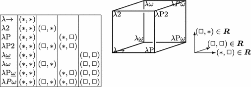
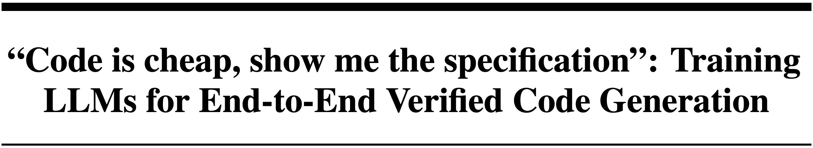
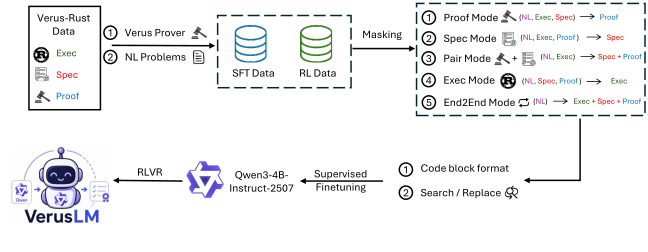

An agent that can automatically resolve crashes in the Linux kernel.
Inspired by web deep research, we created a 3-step pipeline:
search_definition(sym), search_code(regex), and search_commits(regex). 3 reasoning strategies.| Setting | Tool | Max calls | P@k | CRR (%) |
|---|---|---|---|---|
| Assisted | ||||
| GPT-4o | 1 | P@5 | 36.00 | |
| o1 | 1 | P@5 | 51.00 | |
| CrashFixer (Gemini 1.5 Pro-002) | ≥4 | P@16 | 49.22 | |
| CrashFixer (Gemini 2.5 Pro) | ≥4 | P@16 | 70.00 | |
| Unassisted | ||||
| Agentless (GPT-4o) | 4 | P@5 | 31.00 | |
| SWE-agent (GPT-4o) | 15 | P@5 | 31.50 | |
| Code Researcher (GPT-4o) | 15 | P@5 | 48.00 | |
| Code Researcher (GPT-4o + o1) | 15 | P@5 | 58.00 | |
| Code Researcher (Gemini 2.5-Flash) | 15 | P@5 | 67.00 | |
ctags, git log and git grep can solve 67% of kernel crashes!
(The title was my idea.)
Given your natural language intent, an LLM outputs a formal specification, code, and a verifier-checked proof that the code aligns with the specification.

| Model | VeruSage-Bench (849) | SpecBench (97) | VTB-XS (99) | VerifyThisBench (41) | |||||
|---|---|---|---|---|---|---|---|---|---|
| Hands-On% | Plain-Harness% | S1% | S2% | S3 Score | Verified% | Coherent% | Verified% | Coherent% | |
| Qwen3-4B (Inst.) | 3.30 | 1.30 | 2.06 | 1.03 | 0.80 | 3.03 | 3.03 | 0.00 | 0.00 |
| PSV-Verus (3B-Inst.) | 0.24 | 0.12 | 0.00 | 0.00 | — | 8.08 | 2.02 | 0.00 | 0.00 |
| Qwen-VeruSyn (32B-Inst.) | 14.96 | 13.55 | 2.06 | 2.06 | — | 14.14 | 11.11 | 7.32 | 0.00 |
| Kimi-K2.5 | 41.58 | 41.22 | 19.59 | 9.28 | 9.68 | 43.43 | 42.42 | 2.44 | 2.44 |
| VerusLM-4B-Codex-SFT | 1.30 | 9.07 | 0.00 | 0.00 | — | 6.06 | 2.02 | 65.85 | 2.44 |
| VerusLM-4B-Codex | 7.66 | 7.42 | 4.12 | 0.00 | 3 | 46.46 | 5.05 | 75.61 | 0.00 |